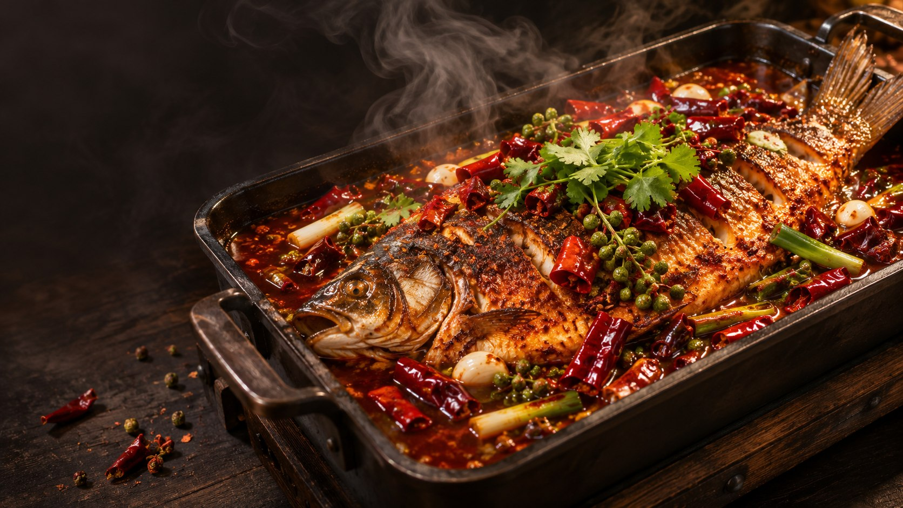

THE TASTE
OF WANZHOU
江城有味，四海同席。
Discover the dish that brings the spirit of a Yangtze riverside city to the table.
A meeting of fire, fragrance, and a table full of company.
A taste of place
More than a dish. A way of coming together.
不止一条鱼，更是一座城的烟火。
A whole fish, grilled until fragrant, then brought together with a richly seasoned sauce and vegetables. Wanzhou grilled fish combines the aroma of the grill with the warmth of a gently simmering shared meal.
It carries the character of Wanzhou, a district of Chongqing on the Yangtze River: generous flavors, lively tables, and the pleasure of eating together. Every cook brings a different touch.
Continue exploring
There is more to discover.
Follow the fire, find a flavor, or meet the city behind the dish. Each path opens a different part of the story.
From fire to table
Follow four stages of preparation and see how a grilled fish becomes a meal to share.
ExploreFind your flavor
Explore four distinctive profiles, compare their ingredients, and find a place to begin.
Explore
The city behind the dish
Meet Wanzhou through its river, everyday streets, and the pleasure of gathering around a table.
ExploreA little curiosity, a new story
Ask Wanzi about the dish, its craft, or the city, with a collection of carefully written answers.
Explore